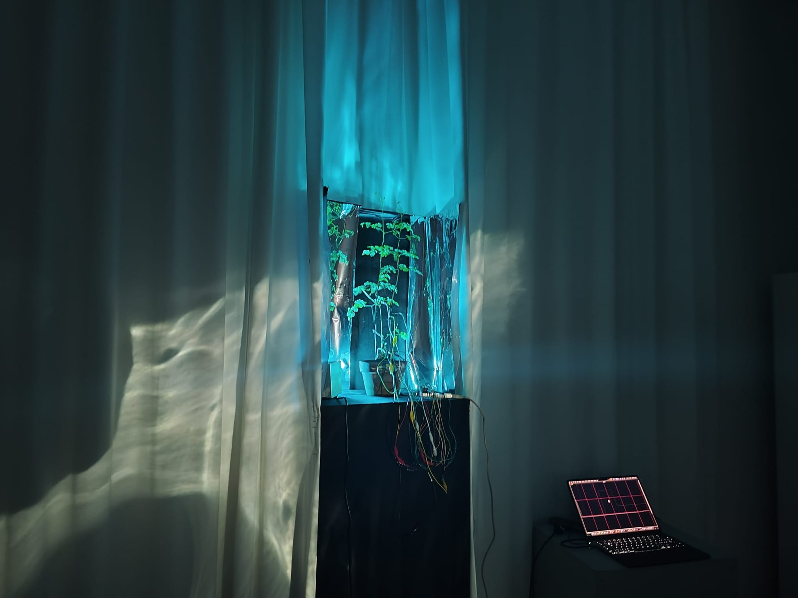
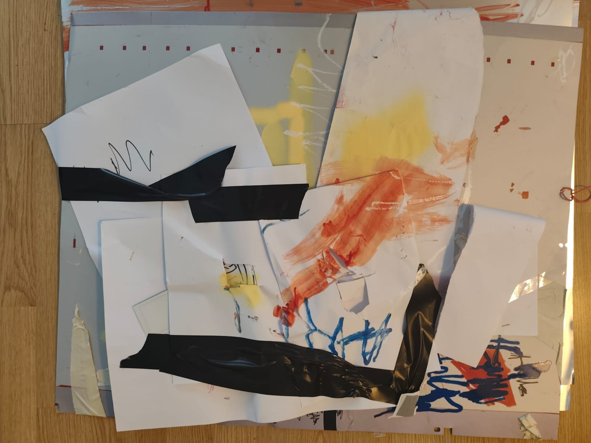
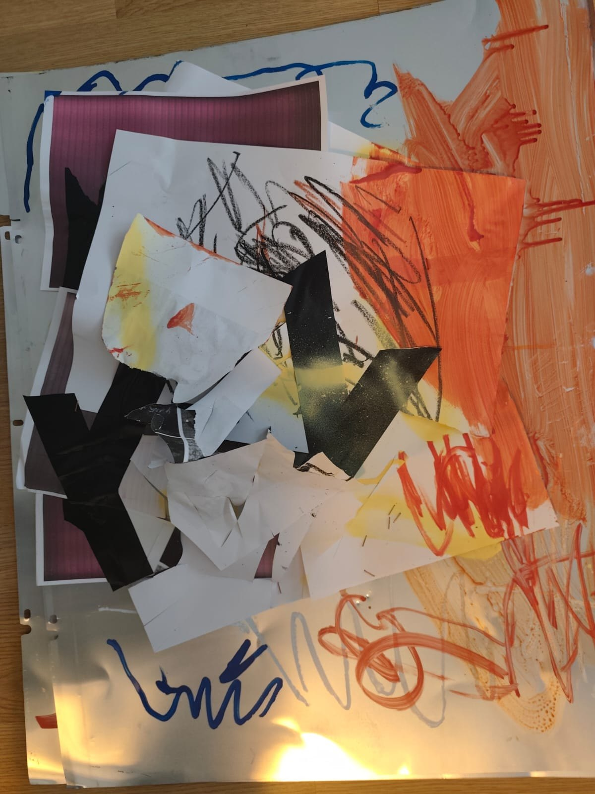
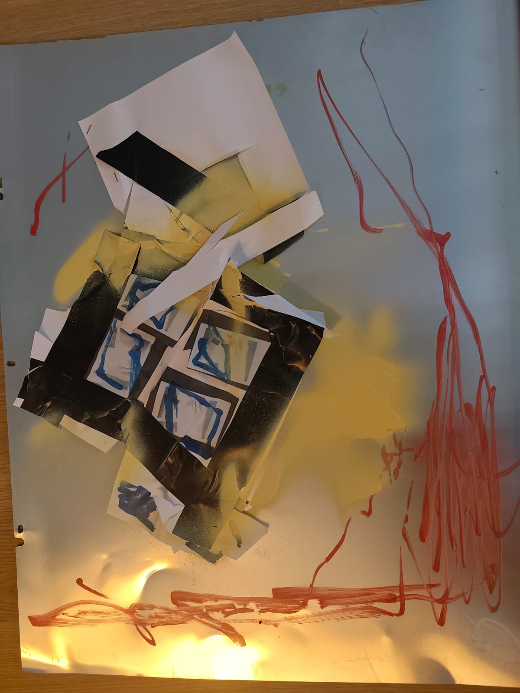
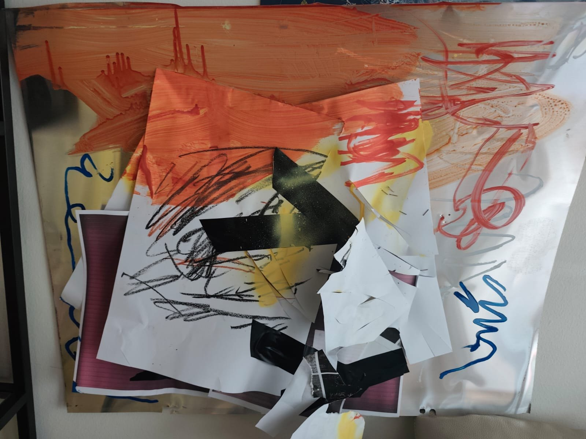
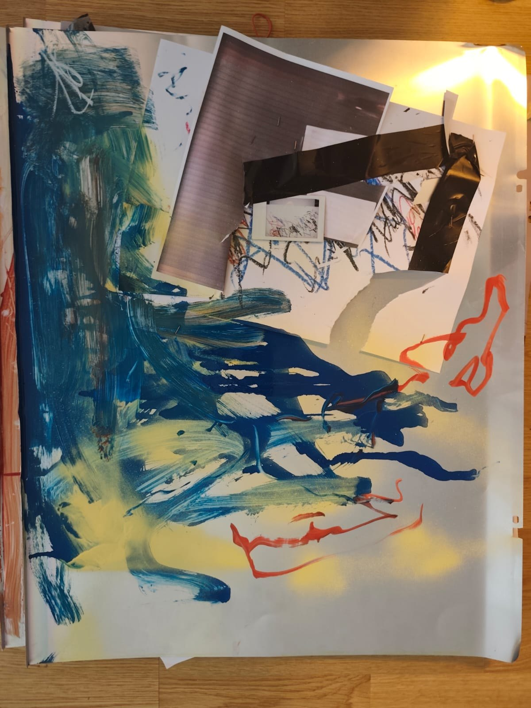
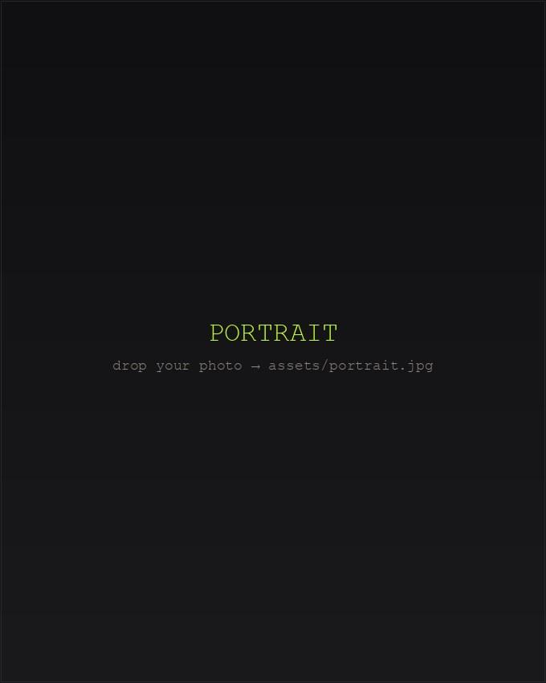

Installation · Biofeedback · Radio
A Field of Relations
Living plant, electrodes, generative sound — semester project, 2026. Broadcast and interview on À suivre, Radio RABE (Bern), May 2026.
Watch & listen ↓Musician · Sound Artist · Composer
Working at the intersection of composition, sound art and experimental music — connecting acoustic and electronic sound across film, theatre and improvisation.
Living plant, electrodes, generative sound — semester project, 2026. Broadcast and interview on À suivre, Radio RABE (Bern), May 2026.
Watch & listen ↓The transformation of a fleeting moment through technical and artistic reproduction — image, object and sound in a chain of translations. À suivre, 2025.
View ↓A binaural miniature composed for headphone listening — created for a binaural audio-technique course. Best heard on headphones.
Listen ↓Audiovisual project submitted for the entrance examination at HEAD — Genève.
Watch ↓Assistant film composition (Ella van der Woude), piano on Silver Haze (2023), touring and live sound across CH / DE / FR / UA.
About ↓
Since Antiquity, plants have often been confined to the margins of human experience. Western thinkers such as Plato and Aristotle viewed them as passive beings, useful primarily for human needs and desires.
This work challenges that historical exclusion. The plant becomes both an object of measurement and a site of projection and relation. Connected to sensors and cables, its activity is translated into images, data, and unstable sound.
Instead of merely turning plant activity into musical signals, the work examines how that translation takes place. The technological mediation remains visible rather than concealed.
Anthropomorphic images drawn from botanical archives become fragmented and distorted. As the plant's electrical signals fluctuate, the sound continuously shifts and destabilizes.
What emerges is not a representation of the plant itself, but a field of relations: between observation and projection, between biological presence and anthropomorphic imagination. The viewer becomes aware of their own interpretative role and participates in this unfinished composition.
In doing so, the work reflects on the consequences of an instrumental relationship to the non-human world. As ecological thought suggests, distancing ourselves from plant life not only erases possibilities of care and reciprocity, but also destabilizes our own position within a shared environment.
The plant here does not speak.
But it is no longer silent.





Performance residues — mixed media on aluminium offset plates: paint, oil pastel, tape, print collage. 2025.
Sonic Redux follows the transformation of a fleeting moment during its technical and artistic reproduction. An image is created, captured, fragmented, and materialized again until it returns in the form of sound.
Inspired by Walter Benjamin's idea of the loss of aura and Roland Barthes' punctum, the performance explores how technical processes alter perception: a detail, a gesture, or a trace can detach itself, transform, and develop a new presence.
Drawing, digitization, printing, and metallic resonances form a chain of translations in which image, object, and sound intertwine. During the performative process, these traces condense into a new kind of sensory experience.
Sonic Redux verfolgt die Transformation eines flüchtigen Moments durch technische und künstlerische Reproduktion. Ein Bild wird erzeugt, aufgenommen, fragmentiert und erneut materialisiert, bis es als Klang in den Raum zurückkehrt.
Ausgehend von Walter Benjamins Idee des Verlusts der Aura und Roland Barthes' Punctum untersucht die Performance, wie technische Verfahren die Wahrnehmung verändern: Ein Detail, eine Geste oder eine Spur kann sich lösen, transformieren und eine neue Präsenz entwickeln.
Zeichnen, Digitalisieren, Drucken und metallische Resonanzen bilden eine Kette von Übersetzungen, in der Bild, Objekt und Klang ineinandergreifen. Im performativen Prozess verdichten sich diese Spuren zu einer neuen sinnlichen Erfahrung.
Sonic Redux suit la transformation d'un moment éphémère lors de sa reproduction technique et artistique. Une image est créée, capturée, fragmentée et matérialisée à nouveau jusqu'à ce qu'elle revienne sous forme de son.
S'inspirant de l'idée de Walter Benjamin sur la perte de l'aura et du punctum de Roland Barthes, la performance explore la manière dont les procédés techniques modifient la perception : un détail, un geste ou une trace peuvent se détacher, se transformer et développer une nouvelle présence.
Le dessin, la numérisation, l'impression et les résonances métalliques forment une chaîne de traductions dans laquelle l'image, l'objet et le son s'entremêlent. Au cours du processus performatif, ces traces se condensent en une expérience sensorielle nouvelle.
More on SoundCloud →
Pragmatic misrepresentation in U.S. immigration discourse — how political language renders events digestible to justify and normalize policy.
Read PDF →Philip K. Dick's Do Androids Dream of Electric Sheep?, Blade Runner and Blade Runner 2049 — identity, projection and the sexualization of androids.
Read PDF →
Colin Dayer is a musician and sound artist working between composition, sound art and experimental music. His focus is the meeting of acoustic and electronic sound — in film, theatre and improvised music — building sonic landscapes with narrative and emotional depth.
Trained in jazz piano at the Conservatoire cantonal de Sion and EJMA Valais, he has toured and recorded across Switzerland, Germany, France and Ukraine, worked in live sound at Loophole Berlin, and collaborated on film scoring, studio production and record-label work in Berlin and New York.